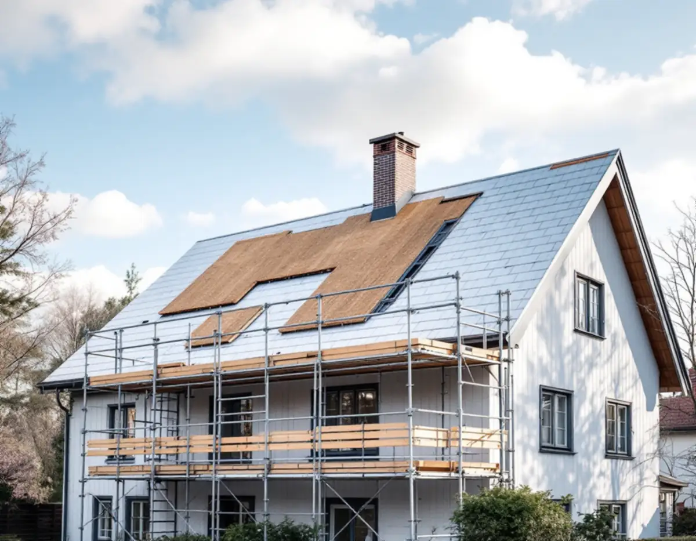
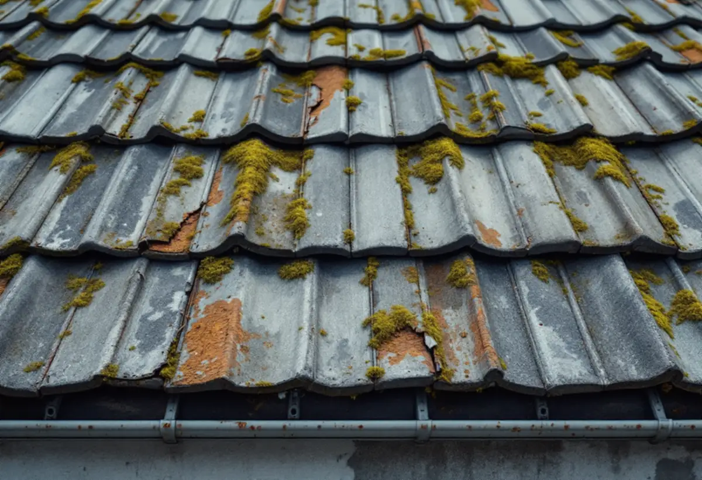
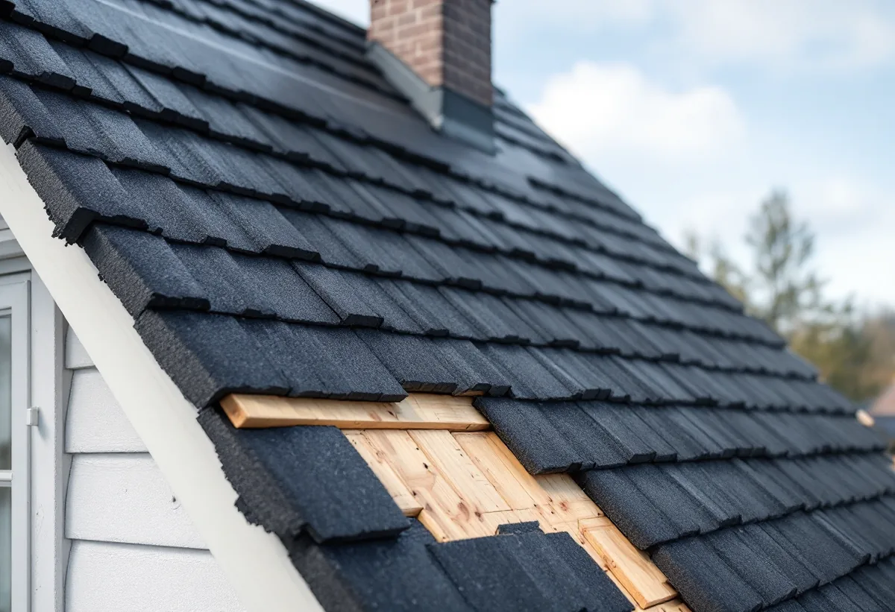
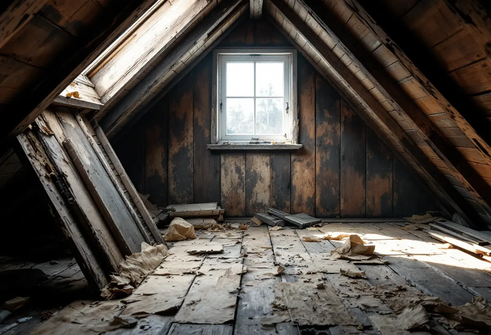
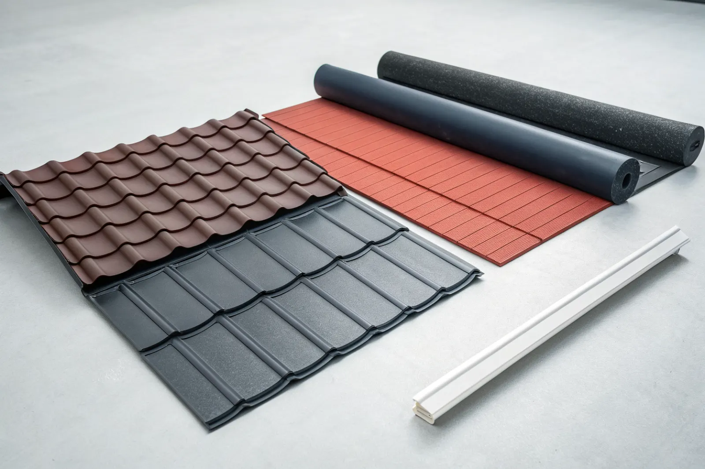
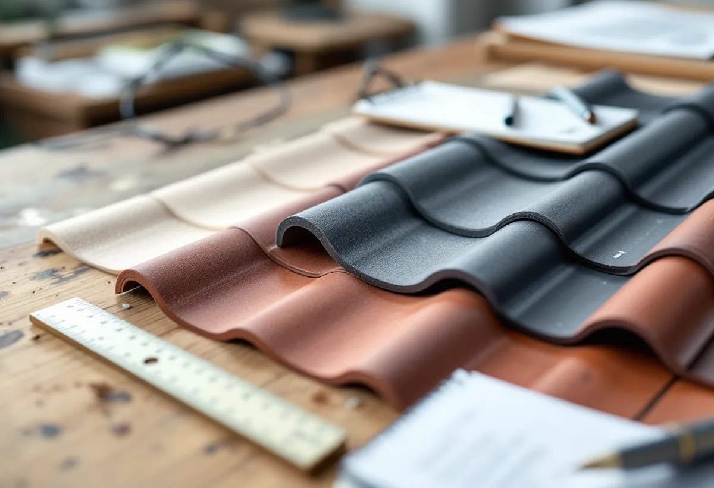
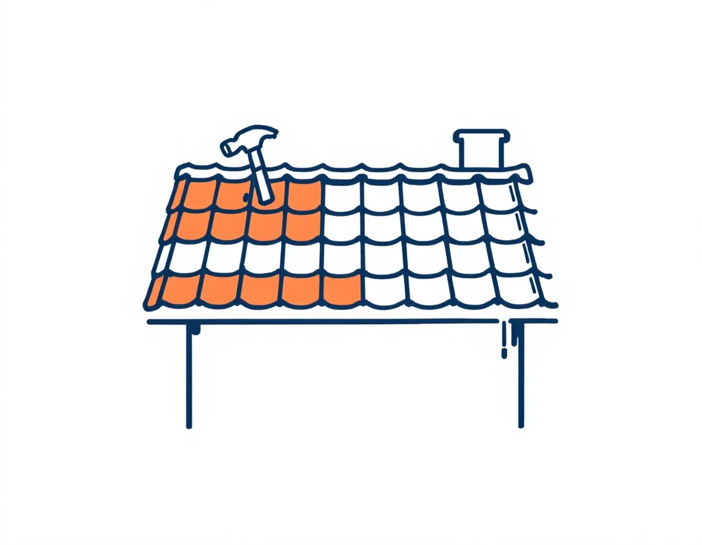
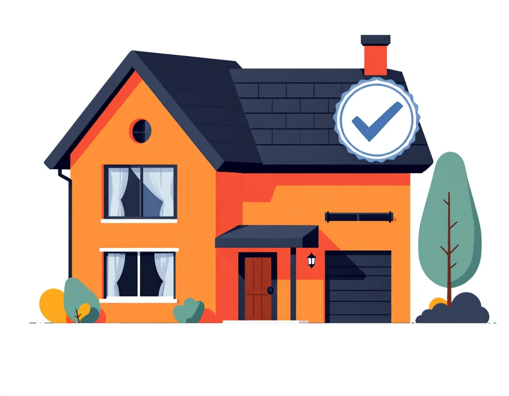

Förfrågan
Du kontaktar oss med kort info om huset och taket.

Tegel, betong och plåt med fast pris och slutbesiktning.
Skicka gärna en bild på taket.
Något blev fel. Kontrollera uppgifterna eller ring 08 12 410 276.
Pris: från 1 400 kr/m² inkl. material, före ROT-avdrag
Vi tittar på jobbet på plats innan du får offert.
Du ser vad som ingår och vad det kostar.
Vi drar av ROT direkt och sköter ansökan.
Geal Entreprenad AB, Bromma. Org.nr 559303-7566.

Ett takbyte blir aktuellt när taket nått slutet av sin livslängd eller när reparationer inte längre lönar sig.
Osäker? Börja med en takbesiktning eller läs takbyte eller takrenovering.

Vi byter hela taket – inte bara ytskiktet.

Underlagspappen tar oftast slut först – därför syns problemen på vinden innan de syns från gatan.
Vi väljer material efter husets ålder och karaktär. I Bromma, Danderyd och Sundbyberg står många villor från 1920–40-talen med branta tegeltak och kupor – där behåller vi tegel och detaljerna som hör till huset.
På 1960–70-talshusen i Sollentuna, Spånga, Täby och Järfälla ligger oftast betongpannor på ett underlag som är 50 år gammalt. Funkishus och radhus med låg lutning får plåt- eller papptak. Vi arbetar i hela Storstockholm – se alla områden.
Ställningen står ändå uppe – gör allt som kräver den samtidigt. Det sparar en ny ställningskostnad senare.
Takbyten görs i Stockholm från tidig vår till sen höst. Huset hålls tätt varje kväll med presenning eller nytt underlag, så du kan bo kvar under hela jobbet.
Vintertid gör vi främst akuta reparationer. Vår och sommar bokas snabbt – begär offert redan på vintern så får du en tid som passar.

Materialet styr livslängd, uttryck och pris. Tegel och betongpannor är vanligast på villor i Stockholm, plåt väljs för låg vikt och låg taklutning.
Vi jämför alternativen för just ditt hus. Läs mer: tegel vs betong vs plåt och livslängd per takmaterial.

Vi lämnar fast pris efter att ha sett taket på plats.
Räkna själv i takbyte-kalkylatorn eller läs vad kostar ett takbyte.
Du kontaktar oss med kort info om huset och taket.
Vi bedömer taket och lämnar tydlig offert med material och tidplan.

03Vi river, förbereder underlag och lägger nytt tak enligt plan.

04Vi går igenom resultatet med dig och dokumenterar arbetet.
Uppskatta priset direkt – area, material och ROT.
Takbyte-kalkylator →Allt om tak på villa: material, kostnad och underhåll.
Tak på villa – komplett guide →Vi är lokala takläggare i Sundbyberg och närområdet.
Takbyte i Sundbyberg →När takbyte kräver bygglov eller anmälan.
Behövs bygglov för takbyte? →Eller ring 08 12 410 276, mån–fre 08–17.
Skicka gärna en bild på taket.
Något blev fel. Kontrollera uppgifterna eller ring 08 12 410 276.